Understanding Learning Dynamics Of Language Models with SVCCA
Naomi Saphra and Adam Lopez
n.saphra@ed.ac.uk
alopez@ed.ac.uk
Institute for Language, Cognition, and Computation
University of Edinburgh
Abstract
gories in lower layers, and more contextual cate-
gories in higher layers. For example, Blevins et al.
Research has shown that neural models im-
(2018) found that a word’s part of speech (POS) is
plicitly encode linguistic features, but there
encoded by lower layers, and the POS of its syn-
has been no research showing how these en-
tactic parent is encoded by higher layers; while
codings arise as the models are trained. We
present the first study on the learning dy-
Belinkov et al. (2018) found that POS is encoded
namics of neural language models, using a
by lower layers and semantic category is encoded
simple and flexible analysis method called
by higher layers. More generally, the most useful
Singular Vector Canonical Correlation Anal-
layer for an arbitrary NLP task seems to depend on
ysis (SVCCA), which enables us to compare
how “high-level” the task is (Peters et al., 2018).
learned representations across time and across
Since we know that lower layers in a multi-layer
models, without the need to evaluate directly
model converge to their final representations more
on annotated data. We probe the evolution of
quickly than higher layers (Raghu et al., 2017), it
syntactic, semantic, and topic representations
and find that part-of-speech is learned earlier
is likely that models learn local lexical categories
than topic; that recurrent layers become more
like POS earlier than they learn higher-level lin-
similar to those of a tagger during training;
guistic categories like semantic class.
and embedding layers less similar. Our results
How and when do neural representations come
and methods could inform better learning al-
to encode specific linguistic categories? Answers
gorithms for NLP models, possibly to incor-
could explain why neural models work and help us
porate linguistic information more effectively.
improve learning algorithms. We investigate how
1
Introduction
representations of linguistic structure are learned
over time in neural language models (LMs), which
Large neural networks have a notorious capacity
are central to NLP: on their own, they are used
to memorize training data (Zhang et al., 2016),
to produce contextual representations of words for
but their high accuracy on many NLP tasks shows
many tasks (e.g. Peters et al., 2018); while con-
that they nonetheless generalize. One apparent ex-
ditional LMs power machine translation, speech
planation for their performance is that they learn
recognition, and dialogue systems. We use a sim-
linguistic generalizations even without explicit su-
ple and flexible method, Singular Vector Canon-
arXiv:1811.00225v3 [cs.CL] 3 Apr 2019
pervision for those generalizations—for example,
ical Correlation Analysis (SVCCA; Raghu et al.,
that subject and verb number agree in English
2017), which allows us to compare representa-
(Linzen et al., 2016); that derivational suffixes at-
tions from our LM at each epoch of training with
tach to only specific parts of speech (Kementched-
representations of other models trained to predict
jhieva and Lopez, 2018); and that short segments
specific linguistic categories.
We discover that
of speech form natural clusters corresponding to
lower layers initially discover features shared by
phonemes (Alishahi et al., 2017). These studies
all predictive models, but lose these features as the
tell us that neural models learn to implicitly rep-
LM explores more specific clusters. We demon-
resent linguistic categories and their interactions.
strate that different aspects of linguistic structure
But how do they learn these representations?
are learned at different rates within a single recur-
One clue comes from the inspection of multi-
rent layer, acquiring POS tags early but continuing
layer models, which seem to encode lexical cate-
to learn global topic information later in training.
2
Methods
and B ∈ RN×dB . We project these views onto a
shared subspace in two steps:
Our experiments require a LM, tagging models,
and a method to inspect the models: SVCCA.
1. Use Singular Value Decomposition (SVD) to
reduce matrices A and B to lower dimen-
2.1
Language model
sional matrices A0 and B0, respectively. This
We model the probability distribution over a se-
is necessary because many dimensions in the
quence of tokens x1 . . . x|x| with a conventional
representations are noisy, and in fact cancel
two-layer LSTM LM. The pipeline from input xt
each other out (Frankle and Carbin, 2018).
at time step t to a distribution over xt+1 is de-
SVD removes dimensions that were likely to
scribed in Formulae (1)–(4). At time step t, input
be less important in the original representa-
word xt is embedded as (1) het, which is input to
tions from A and B, and in keeping with
a two-layer LSTM, producing outputs (2) h1t and
Raghu et al. (2017), we retain enough dimen-
(3) h2t at these layers, along with cell states c1t and
sions to keep 99% of the variance in the data.
c2t. A softmax layer converts h2t to a distribution
from which (4) ˆ
xt+1 is sampled.
2. Use Canonical Correlation Analysis (CCA)
to project A0 and B0 onto a shared sub-
het = embedding(xt)
(1)
space, maximizing the correlation of the pro-
h1
jections. Formally, CCA identifies vectors
t , c1
t
=
LSTM1(het, h1t−1, c1t−1)
(2)
h2
w, v to maximize ρ = <w>A0,v>B0> . We
t , c2
t
=
LSTM2(h1t, h2t−1, c2t−1)
(3)
kw>A0kkv>B0k
ˆ
x
treat these w, v as new basis vectors, comput-
t+1
∼ softmax(h2t)
(4)
ing the top dC (a hyperparameter) such ba-
Each function can be thought of as a representa-
sis vectors to form projection matrices W ∈
tion or embedding of its discrete input; hence he
RdC×dA0 , V ∈ RdC×dA0 . The resulting pro-
t is
a representation of x
jections W A0 and V B0 map onto a shared
t, and—due to the recursion
in (2)—h1
subspace where the representations of each
t is a representation of x1 . . . xt.
datapoint from A0 and B0 are maximally cor-
2.2
Tagging models
related.
To inspect our language model for learned linguis-
tic categories, we will use a collection of tagging
Intuitively, the correlation ρ will be high if both
models, designed to mimic the behavior of our lan-
representations encode the same information, and
guage model but predicting the next tag rather than
low if they encode unrelated information. Figure 1
the next word. Given x
illustrates how we use SVCCA to compare repre-
1 . . . x|x|, we model a corre-
sponding sequence of tags y
sentation h2
1 . . . y|
t of our language model with the recur-
x| using a one-
0
layer LSTM. (Our limited labeled data made this
rent representation of a tagger, h1t . In practice, we
more accurate on topic tagging than another two-
run over all time steps in a test corpus, rather than
layer LSTM, so this architecture does not directly
a single time step as illustrated.
parallel the LM.)
3
Experimental Setup
he0
t
=
embedding0(xt)
(5)
We trained our LM on a corpus of tok-
h10
0
0
0
0
t , c1
t
=
LSTM0(het , h1t−1 , c1t−1 )
(6)
enized, lowercased English Wikipedia (70/10/20
ˆ
y
0
train/dev/test split).
To reduce the number of
t+1
∼ softmax0(h1t )
(7)
unique words in the corpus, we excluded any sen-
We will also discuss input taggers, which share
tence with a word type appearing fewer than 100
this architecture but instead sample yt, the tag of
times. Words appearing fewer than 100 times in
the most recently observed word.
the resulting training set are replaced with an un-
known token. The resulting training set has over
2.3
SVCCA
227 million tokens of 20K types.
SVCCA is a general method to compare the cor-
We train for 50 epochs to maximize cross-
relation of two vector representations. Let dA and
entropy, using a batch size of 40, dropout ratio
dB be their dimensions. For N data points we have
of 0.2, and sequence length of 35. The optimizer
two distinct views, given by matrices A ∈ RN×dA
is standard SGD with clipped gradients at 0.25,
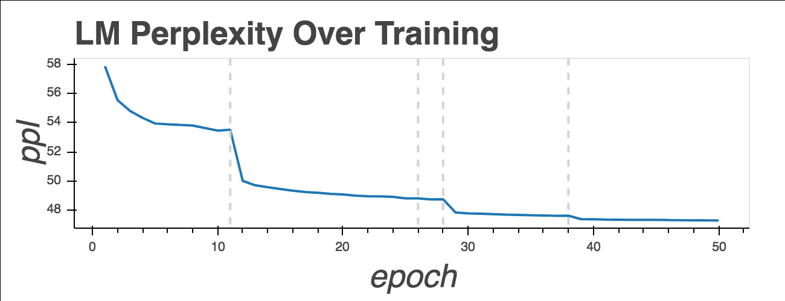
Language model
xt+1
Tag Predictor
softmax
yt+1
SVD(h2)
SVD
h2t
softmax
SVD(h10)
SVD
L
0
STM
h1t
h1t
LSTM
L
0
STM
het
het
embedding
embedding
xt
max ρ(W · SVD(h2), V · SVD(h10))
xt
W,V
Figure 1: SVCCA used to compare the layer h2 of a language model and layer h10 of a tagger.
Tag
These
cats
live
in
that
house
.
UDP POS
DET
NOUN
VERB
ADP
DET
NOUN
SYM
PTB POS
DT
NNS
VBP
IN
DT
NN
.
SEM (coarse)
DEM
ENT
EVE
ATT
DEM
ENT
LOG
SEM (fine)
PRX
CON
ENS
REL
DST
CON
NIL
topic
pets
pets
pets
pets
pets
pets
pets
Table 1: An annotated example sentence from the article pets, based on an example from Bjerva et al. (2016).
POS tagging
For syntactic categories, we use
POS tags, as in Belinkov et al. (2017).
As a
coarse-grained tagset, we use silver Universal De-
pendency Parse (UDP) POS tags automatically
added to our Wikipedia corpus with spacy.1 We
also use a corpus of fine-grained human anno-
tated Penn Treebank POS tags from the Groningen
Figure 2: Test performance of the LM. Vertical dotted
Meaning Bank (GMB; Bos et al., 2017).
lines indicate when the optimizer rescales the step size.
Semantic tagging
We follow Belinkov et al.
(2018) in representing word-level semantic infor-
with the learning rate quartered when validation
mation with silver SEM tags (Bjerva et al., 2016).
loss increases. The result of training is shown in
SEM tags disambiguate POS tags in ways that are
Figure 2, which illustrates the dips in loss when
relevant to multilingual settings. For example, the
learning rate changes. All experiments on the LM
comma is not assigned a single tag as punctua-
throughout training are conducted by running the
tion, but has distinct tags according to its function:
model at the end of each epoch in inference mode
conjunction, disjunction, or apposition. The 66
over the test corpus.
fine-grained SEM tag classes fall under 13 coarse-
grained tags, and an ‘unknown’ tag.
3.1
Taggers
Global topic
For topic, we classify each word
of the sequence by its source Wikipedia article;
To understand the representations learned by our
for example, every word in the wikipedia article
LM, we compare them with the internal represen-
on Trains is labeled “Trains”. This task assesses
tations of tagging models, using SVCCA. Where
whether the network encodes the global topic of
possible, we use coarse-grained and fine-grained
the sentence.
tagsets to account for effects from the size of the
tagset. Table 1 illustrates our tagsets.
1https://spacy.io/
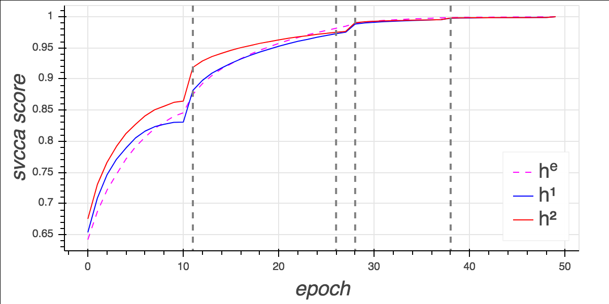
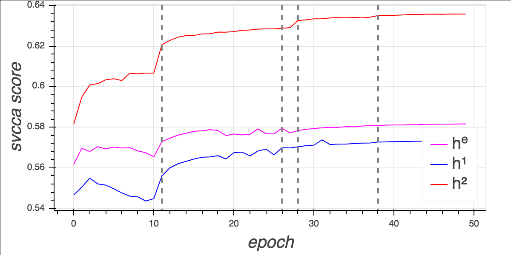
Figure 3: SVCCA score between representations at
Figure 4: SVCCA score between the LM at each epoch
each epoch and from the final trained LM.
and a LM with different initialization.
Empirical upper bounds.
Our main experi-
UDP silver POS and topic information use the
ments will test the rate at which different linguis-
same corpus, taken from the 100 longest articles
tic categories are learned by different layers, but
in Wikipedia randomly partitioned in a 70/10/20
to interpret the results, we need to understand the
train/dev/test split. Each token is tagged with POS
behaviour of SVCCA for these models. In the-
and with the ID of the source article. The corpus
ory, SVCCA scores can vary from 0 for no corre-
is taken from the LM training data, which may in-
lation to 1 for perfect correlation. But in practice,
crease the similarity between the tag model and
these extreme cases will not occur. To establish
LM. Because both tag predictors are trained and
an empirical upper bound on correlation, we com-
tested on the same domain as the LM, they can
pared the similarity at each epoch of training to the
be easily compared in terms of their similarity to
frozen final state of a LM with identical architec-
the LM representation. Though the SEM corpus
ture but different initialization, trained on the same
and the PTB corpus are different domains from
data (Figure 4).2 The correlations increase over
the Wikipedia training data, we compare their ac-
time as expected, but to a maximum near 0.64;
tivations on the same 191K-token 100-article test
we don’t expect correlations between our LM and
corpus.
other models to exceed this value. We explore cor-
Table 2 describes the training and validation
responding lower bounds in our main experiments
corpus statistics for each tagging task. Note that
below.
topic and UDP POS both apply to the same en-
wikipedia corpus, but PTB POS and SEM use two
Correlations between different layers.
Next
different unaligned sets from the GMB corpus.
we examine the correlation between different lay-
ers of the same model over time (Figure 5). We ob-
serve that, while over time correlation increases, in
4
Experiments, Results, and Analysis
general closer layers are more similar, and they are
less correlated than they are with the same layer of
A benefit of SVCCA is its flexibility: it can com-
a differently initialized model. This supports the
pute the correlation of a hidden representation to
idea that we should compare recurrent layers with
any other vector.
Raghu et al. (2017) used it
recurrent layers because their representations play
to understand learning dynamics by comparing a
similar roles within their respective architectures.
learned representation to snapshots of the same
representation at different epochs during training.
SVCCA vs. Diagnostic classifiers
A popular
We use a similar experiment to establish the basic
method to analyze learned representations is to use
learning dynamics of our model. In our shallow
a diagnostic classifier (Belinkov et al., 2017), a
2-level model, activations at h1 converge slightly
separate model that is trained to predict a linguistic
after h2 (Figure 3). This differs from the results
category of interest, yt, from an arbitrary hidden
of Raghu et al. (2017), who found that a 5-layer
layer ht. Diagnostic classifiers are widely used
stacked LSTM LM exhibits faster convergence at
(Belinkov et al., 2018; Giulianelli et al., 2018).
lower layers, but this difference may be attributed
But if a diagnostic classifier is trained on enough
to our much larger training data, which gives our
2This experiment is similar to the comparisons of ran-
model sufficient training data at early epochs.
domly initialized models by Morcos et al. (2018).
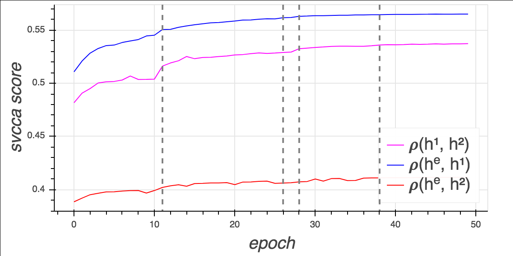
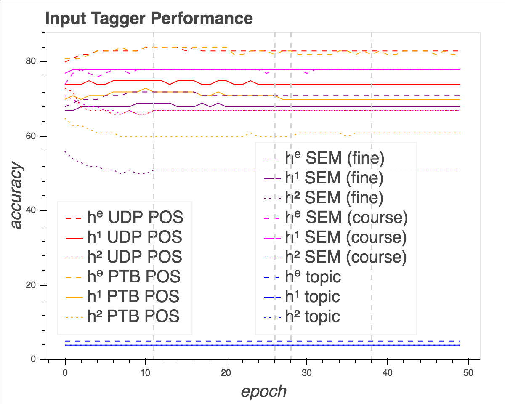
number
token count
label t + 1
label t
randomized
tag
corpus
of classes
train
dev
acc
ppl
acc
ppl
acc
ppl
UDP POS
wiki
17
665K
97K
50
4.3
93
1.2
21
8.9
PTB POS
GMB
36
943K
136K
51
4.7
95
1.18
14
18.0
SEM (coarse)
GMB
14
937K
132K
55
3.5
91
1.3
22
9.0
SEM (fine)
GMB
67
937K
132K
50
5.6
88
1.45
17
21.5
topic
wiki
100
665K
97K
36
19.1
37
16.3
5
81.6
Table 2: Tag predictor and tagger statistics. Accuracy and perplexity on t + 1 are from the target tag predictor,
on t are from the input tagger. Metrics obtained when training on randomly shuffled labels are provided as a low
baseline. Accuracy is on the test set from the training domain (GMB or Wikipedia).
Figure 5: SVCCA score between different layers of the
LM at each epoch. For example, ρ(h2, h1) compares
the activations h2 with the activations h1.
examples, then random embeddings as input rep-
Figure 6: Learning dynamics interpreted with diagnos-
resentations often outperform any pretrained in-
tic classifiers labeling input word tag yt.
termediate representation (?Zhang and Bowman,
2018).
This suggests that diagnostic classifiers
may work simply by memorizing the associa-
Another distinction from the typical use of diag-
tion between an embedding and the most frequent
nostic classifiers is that probes are usually used to
output category associated with that embedding;
decode tag information about the context or most
since for many words their category is (empiri-
recent input from the hidden state at the current
cally) unambiguous, this may give an inflated view
step. Because the hidden representation at time
of just how much a model “understands” about
t is meant to encode predictive information about
that category.
the target word at time t+1, we treat it as encoding
Our use of SVCCA below will differ from the
a prediction about the tag of the target word.
use of diagnostic classifiers in an important way.
To understand the empirical strengths and
Diagnostic classifiers use the intermediate repre-
weaknesses of these approaches, we compare the
sentations of the LM as inputs to a tagger. A repre-
use of SVCCA and diagnostic classifiers in under-
sentation is claimed to encode, for example, POS
standing learning dynamics. In other words, we
if the classifier accurately predicts it—in other
ask: is our first conceptual shift (to SVCCA) nec-
words, whether it can decode it from the repre-
essary? To test this, we use the same model as Be-
sentation. We will instead evaluate the similarity
linkov et al. (2017), which classifies an arbitrary
between the representations in an LM and in an
representation using a ReLU followed by a soft-
independently-trained tagger. The intuition behind
max layer. To be consistent with Belinkov et al.
this is that, if the representation of our LM encodes
(2017), we use yt as their target label. We repeat
a particular category, then it must be similar to the
their method in this manner (Figure 6) as well as
representation of model that is specifically trained
applying our second modification, in which we in-
to predict that category. A benefit of the approach
stead target the label yt+1 (Figure 7).
is that similarity can be evaluated on any dataset,
We found the correlations to be relatively stable
not only one that has been labeled with the linguis-
over the course of training. This is at odds with
tic categories of interest.
the results in Figures 2 and 3, which suggest that
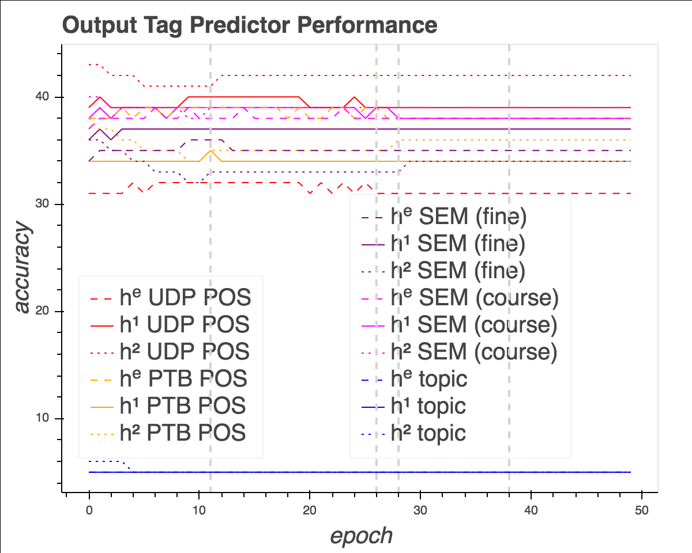
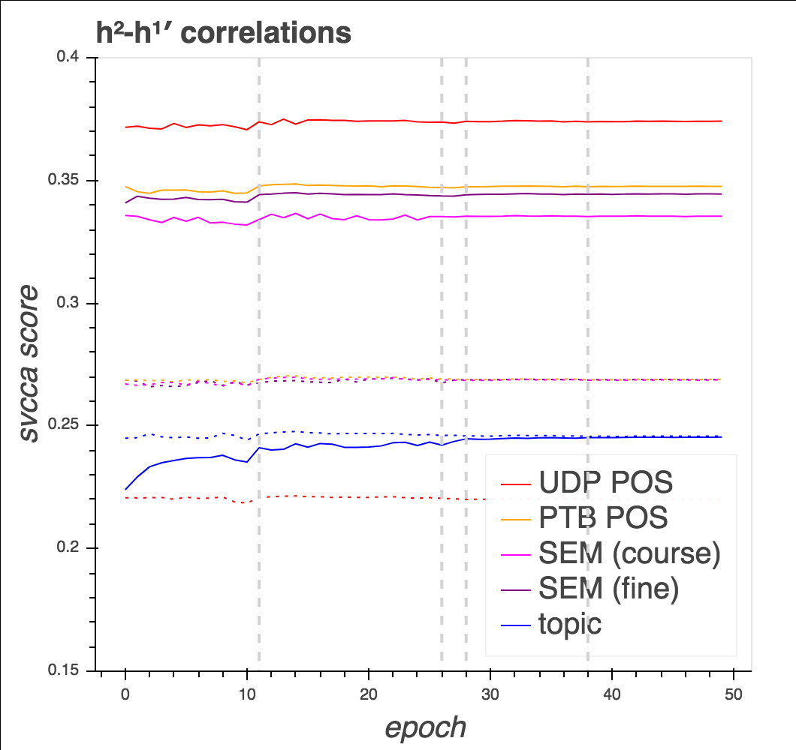
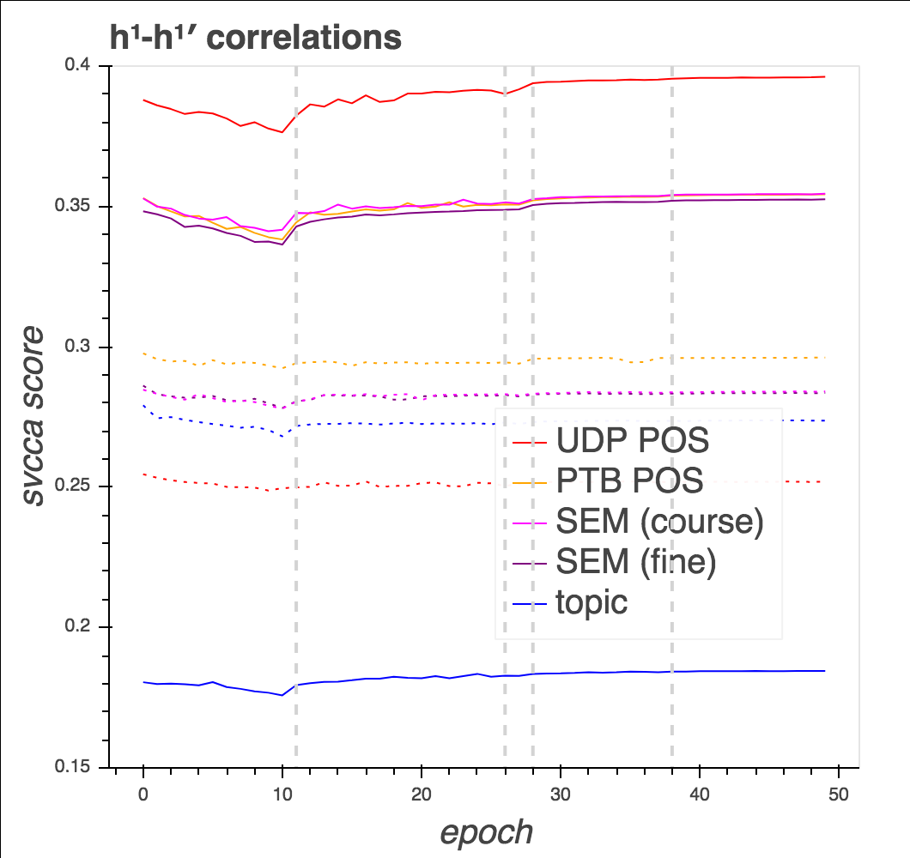
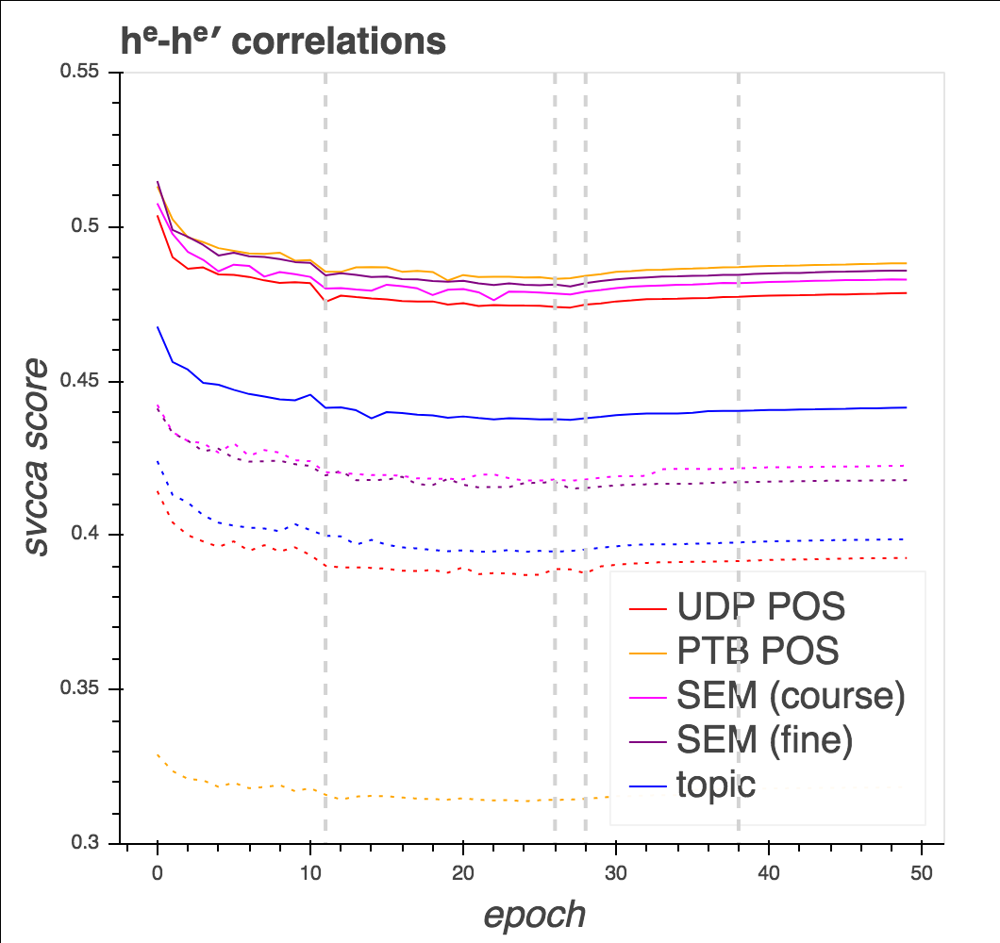
Figure 7: Learning dynamics interpreted with diagnos-
tic classifiers labeling target word tag yt+1.
representations change substantially during train-
ing in ways that materially affect the accuracy of
the LM. This suggests that diagnostic classifiers
are not illustrating improvements in word repre-
sentations throughout training, and we conclude
that they are ineffective for understanding learning
dynamics. Our remaining experiments use only
SVCCA.
4.1
SVCCA on Output Tag Prediction
We applied SVCCA to each layer of our LM with
the corresponding layer of each tag predictor in
order to find the correlation between the LM rep-
resentation and the tag model representation at
each level (Figure 8). To establish empirical lower
bounds on correlation, we also trained our taggers
on the same data with randomly shuffled labels,
as in Zhang et al. (2016). These latter experi-
ments, denoted by the dotted lines of Figure 8,
show how much of the similarity between mod-
els is caused by their ability to memorize arbi-
trary associations. Note that the resulting scores
are nonzero, likely because the linguistic structure
of the input shapes representations even when the
output is random, due to the memorization phase
of training (Shwartz-Ziv and Tishby, 2017).
The strongest similarity at recurrent layers be-
longs to the most local property, the UDP POS
tag. Both coarse- and fine-grained semantic tags,
which rely on longer range dependencies, fall be-
Figure 8: SVCCA correlation scores between the LM
low UDP POS consistently. Topic, which is global
predicting xt+1 and the tag model predicting yt+1. At
to an entire document, is the least captured and the
the end of each epoch, we compare the current LM with
slowest to stabilize. Indeed, correlation with true
the final tag model. Dotted lines use shuffled tags. Gray
topic falls consistently below the score for a model
vertical lines mark when the step size is rescaled.
trained on randomized topic tags, implying that
put. The network thus initially learns to effectively
early in training the model has removed the con-
represent the input, then compresses this represen-
text necessary to identify topic (below even the in-
tation, keeping only the elements relevant to the
adequate contextual information memorized by a
output.3 If the LM begins by maximizing mutual
model with random labels), which depends on the
information with input, because the input is identi-
general vocabulary in a sentence rather than a local
cal for the LM and tag models it may lead to these
sequence. Over time correlation rises, possibly be-
similar initial representations, followed by a de-
cause the model permits more long-distance con-
cline in similarity as the compression narrows to
text to be encoded. Khandelwal et al. (2018) found
properties specific to each task.
that LSTMs remember content words like nouns
for more time steps than they remember function
4.2
SVCCA on Input Tagging
words like prepositions and articles. We hypothe-
Our second conceptual shift is to focus on out-
size that the LM’s slower stabilization on topic is
put tag prediction—asking what a representation
related to this phenomenon, since it must depend
encodes about the next output word, rather than
on content words, and its ability to remember them
what it has encoded about words it has already ob-
increases throughout training.
served in the input. What effect does this have?
The encoder layer exhibits very different pat-
Since we already studied output tags in the pre-
terns. Because the representation produced by the
vious set of experiments, here we consider input
encoder layer is local to the word, the nuances
tags, in the style of most diagnostic classifier anal-
that determine how a word is tagged in context
ysis (Figure 9). The learning dynamics are similar
cannot be learned.
The encoder layers are all
to those for tag prediction, but the UDP POS tag-
highly similar to each other, which suggests that
ger decreases dramatically in all correlations while
the unigram representations produced by the en-
the GMB-trained taggers4 often increase slightly.
coder are less dependent on the particular end task
While the shapes of the lines are similar, UDP
of the neural network. Similarity between the en-
POS no longer consistently dominates the other
coders declines over time as they become more
tasks in recurrent layer correlation. Instead, we
specialized towards the language modeling task.
find the more granular PTB POS tags lead to the
This decline points to some simple patterns which
most similar representations.
are learned for all language tasks, but which are
5
Discussion and Conclusions
gradually replaced by representations more use-
ful for language modeling. This process may even
We find clear patterns in the encoding of linguistic
be considered a naturally occurring analog to the
structure with SVCCA, in contrast to the weaker
common practice of initializing the encoder layer
results from a less responsive diagnostic classifier.
as word embeddings pretrained an unrelated task
Because SVCCA proves so much more sensitive
such as skipgram or CBOW (Mikolov et al., 2013).
than the diagnostic classifiers currently in use, we
It seems that the ‘easy’ word properties, which
believe that future work on measuring the encod-
immediately improve performance, are similar re-
ing of linguistic structure should use the similarity
gardless of the particular language task.
of individual modules from independently trained
At h1, the correlation shows a clear initial de-
tag predictors rather than the performance of tag
cline in similarity for all tasks. This seems to point
predictors trained on a particular representation.
to an initial representation that relies on simple
This system should also be of interest because
shared properties, which in the first stage of train-
it is efficient. To train a diagnostic classifier, we
ing is gradually dissolved before the layer begins
must run a forward pass of the LM for each for-
to converge on a structure shared with each tag
ward pass of the auxiliary model, while SVCCA
predictor. It may also be linked to the information
only requires the LM to run on the test set. A fur-
bottleneck learning phases explored by Shwartz-
ther efficiency gain is particular to studying learn-
Ziv and Tishby (2017). They suggest that neu-
3This memorization–compression learning pattern paral-
ral networks learn by first maximizing the mutual
lels the memorization–generalization of the first half of the
information between the input and internal rep-
U-shaped curve exhibited by human children learning irreg-
ular word forms. ? observe similar patterns when artificially
resentation, then minimizing the mutual informa-
modeling inflection.
tion between the internal representation and out-
4PTB POS, SEM (fine), and SEM (coarse)
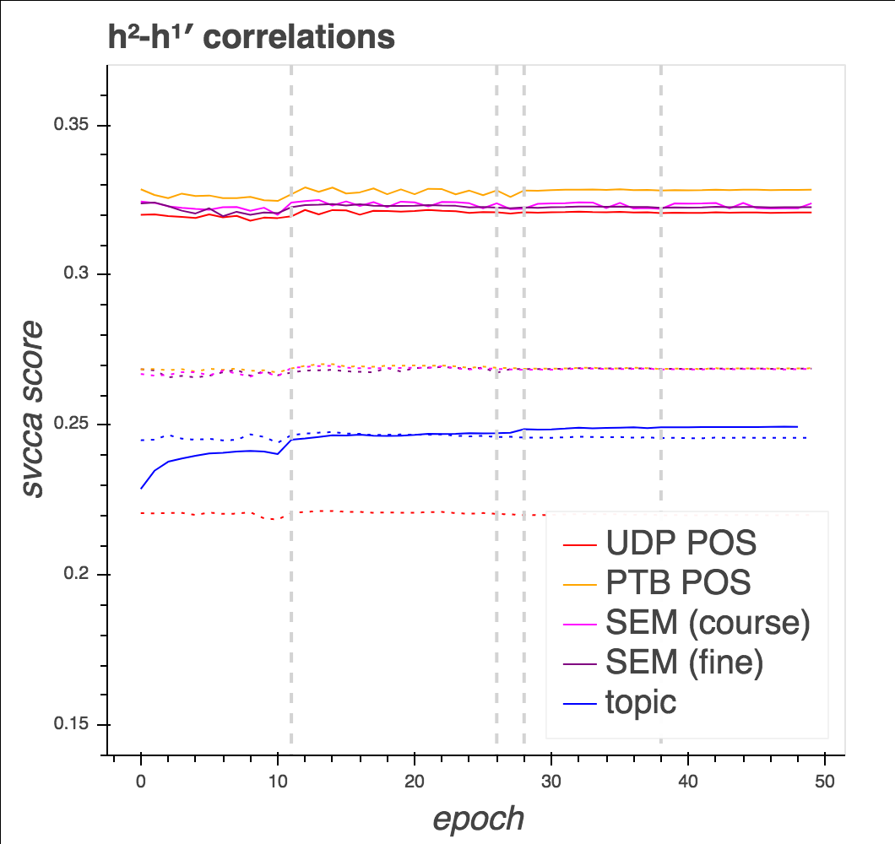
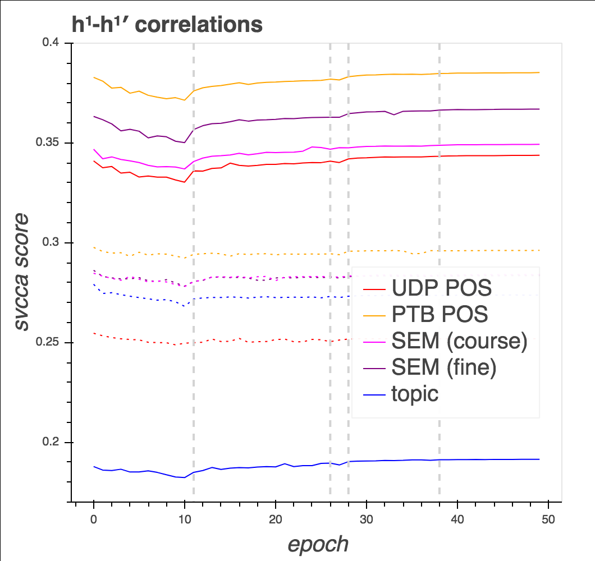
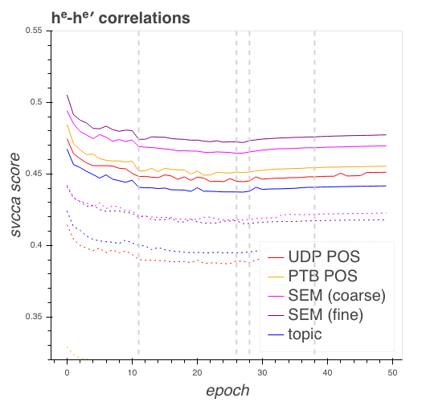
ing dynamics: we train only one tagger and com-
pare it to different versions of the LM over train-
ing, but for standard probing, we must train a
new version of each layer’s tagger at each epoch.
Our SVCCA experiments in Figure 8 ran in hours,
while the diagnostic classifier experiments in Fig-
ure 7 ran for days.
Our method holds another, more subtle advan-
tage. Our analysis provides an alternative view of
what it means for a model to encode some linguis-
tic trait. The literature on analyzing neural net-
works includes a broad spectrum of interpretations
about what it means to encode a property. At one
end of the spectrum lies the purely informational
view (e.g., mutual information; ?). Mutual infor-
mation is a very flexible view, but it requires us to
compute theoretical information content, which in
practice can only be estimated. Furthermore, in-
formation can be represented without being used,
as shown by ?, who found that NMT systems of-
ten predicted tense according to a diagnostic clas-
sifier but did not produce the correct tense as out-
put. The other end of the spectrum is focused on
the structure of the representation space (e.g., the
features and the property in question are linearly
similar; Alishahi et al., 2017). Analyzing struc-
tural similarity should remedy the shortcomings of
the informational view, but most intermediate rep-
resentations are not targeted to extract the prop-
erty in question through a linear transformation,
and failing to be interpretable through such sim-
ple extraction should not be equated to a failure to
encode that property.
Most of the literature on analyzing representa-
tions, by probing with a more complex architec-
ture, seeks the flexibility of mutual information
with the concreteness and tractability of the struc-
tural view – but instead obscures the strict infor-
mation view without offering interpretable infor-
mation about the structure, because the architec-
ture of a diagnostic classifier affects its perfor-
mance. It should not be surprising that represen-
tational quality as measured by such systems is a
poor indicator of translation quality (?). SVCCA,
in contrast, is a structural view that does not di-
rectly compare an activation that targets word pre-
diction with a particular tag, but instead compares
that activation with one targeting the prediction of
Figure 9: SVCCA correlation scores between LM ac-
the tag.
tivations when predicting xt+1 and tagger activations
when labeling yt. Dotted lines use shuffled tags. Gray
Let us consider a specific common probing
vertical lines mark when the step size is rescaled.
method. What do we learn about the LM when a
feedforward network cannot extract tag informa-
language modeling representations.
tion directly from the embedding layer, but can
The techniques in this paper could be applied to
from a recurrent layer? It may be tempting to con-
better understand the high performance of a sys-
clude that tag information relies heavily on con-
tem like ELMo (Peters et al., 2018). Different lay-
text, but consider some alternative explanations.
ers in such a system are useful for different tasks,
If the embedding encodes the tag to be interpreted
and this effect could be understood in terms of the
by a recurrent layer, a feedforward network may
gradual divergence between the layers and their re-
not be capable of representing the function to ex-
spective convergence to representations geared to-
tract that tag because it does not have access to a
ward a single task.
context vector for aiding interpretation of the hid-
den layer. Perhaps its activation functions cover a
Acknowledgements
different range of outputs. By directly comparing
We thank Denis Emelin, Sameer Bansal, Toms
LSTM layers to LSTM layers and embedding lay-
Bergmanis, Maria Corkery, Sharon Goldwater,
ers to embedding layers, we respect the shape of
Sorcha Gilroy, Aibek Makazhanov, Yevgen Ma-
their outputs and the role of each module within
tusevych, Kate McCurdy, Janie Sinclair, Ida Szu-
the network in our analysis.
bert, Nikolay Bogoychev, Clara Vania, and the
The results of our analysis imply that early in
anonymous reviewers for helpful discussion and
training, representing part of speech is the natu-
comments on drafts. We thank Matthew Summers
ral way to get initial high performance. However,
for assistance with visualisations.
as training progresses, it increasingly benefits the
model to represent categories with longer-range
dependencies, such as topic.
References
Afra Alishahi, Marie Barking, and Grzegorz Chrupała.
6
Future Work
2017. Encoding of phonology in a recurrent neu-
ral model of grounded speech. In Proceedings of
One direction for future work is exploring how
the 21st Conference on Computational Natural Lan-
generalization interacts with the correlations be-
guage Learning (CoNLL 2017), pages 368–378.
tween LMs and tag predictors. It may be that a
Yonatan Belinkov, Nadir Durrani, Fahim Dalvi, Has-
faithful encoding of a property like POS tag in-
san Sajjad, and James Glass. 2017. What do Neural
dicates that the LM is relying more on linguistic
Machine Translation Models Learn about Morphol-
ogy? In Proceedings of the 55th Annual Meeting of
structure than on memorizing specific phrases, and
the Association for Computational Linguistics (Vol-
therefore is associated with a more general model.
ume 1: Long Papers), pages 861–872, Vancouver,
If these measurements of structure encoding are
Canada. Association for Computational Linguistics.
associated with more general models, we might in-
Yonatan Belinkov, Lluís Màrquez, Hassan Sajjad,
troduce regularizers or other modifications that ex-
Nadir Durrani, Fahim Dalvi, and James R. Glass.
plicitly encourage correlation with a tagging task.
2018. Evaluating Layers of Representation in Neu-
Combes et al. (2018) identified the phenomenon
ral Machine Translation on Part-of-Speech and Se-
mantic Tagging Tasks. CoRR, abs/1801.07772.
of gradient starvation, meaning that while fre-
quent and unambiguous features are learned
Johannes Bjerva, Barbara Plank, and Johan Bos. 2016.
quickly in training, they slow down the learning
Semantic Tagging with Deep Residual Networks. In
COLING.
of rarer features. For example, artificially bright-
ening images according to their class leads to a
Terra Blevins, Omer Levy, and Luke Zettlemoyer.
delay in learning to represent the more complex
2018. Deep RNNs Encode Soft Hierarchical Syn-
tax. arXiv:1805.04218 [cs]. ArXiv: 1805.04218.
natural class features. Although it is tempting to
claim that semantic structure is learned using syn-
Johan Bos, Valerio Basile, Kilian Evang, Noortje J
tactic structure as natural scaffolding, it is possible
Venhuizen, and Johannes Bjerva. 2017. The gronin-
gen meaning bank. In Handbook of linguistic anno-
that the simple predictive power of POS is acting
tation, pages 463–496. Springer.
as an attractor and starving semantic features that
are rarer and more ambiguous. A possible direc-
Remi Tachet des Combes, Mohammad Pezeshki,
Samira Shabanian, Aaron Courville, and Yoshua
tion for future work would be to explore which of
Bengio. 2018. On the Learning Dynamics of Deep
these explanations is true, possibly by decorrelat-
Neural Networks.
arXiv:1809.06848 [cs, stat].
ing particular aspects of linguistic structure from
ArXiv: 1809.06848.
Jonathan Frankle and Michael Carbin. 2018.
The
A
Performance Out Of Domain
Lottery Ticket Hypothesis: Training Pruned Neu-
ral Networks.
arXiv:1803.03635 [cs].
ArXiv:
Because SEM tags and PTB POS tags were
1803.03635.
both trained on the GMB corpus, we present the
Mario Giulianelli, Jack Harding, Florian Mohnert,
SVCCA similarities on an in-domain GMB test
Dieuwke Hupkes, and Willem Zuidema. 2018. Un-
corpus as well as the Wikipedia test corpus used
der the Hood: Using Diagnostic Classifiers to In-
elsewhere in the paper. The results are in Fig-
vestigate and Improve how Language Models Track
ures 10-11. In general correlations are higher us-
Agreement Information.
arXiv:1808.08079 [cs].
ing the original tagging domain, but not enough to
ArXiv: 1808.08079.
contradict our earlier analysis. The shapes of the
Yova Kementchedjhieva and Adam Lopez. 2018. Indi-
curves remain similar.
catements that character language models learn En-
glish morpho-syntactic units and regularities.
In
Proc. of Workshop on Analyzing and interpreting
neural networks for NLP.
Urvashi Khandelwal, He He, Peng Qi, and Dan
Jurafsky. 2018.
Sharp Nearby,
Fuzzy Far
Away: How Neural Language Models Use Context.
arXiv:1805.04623 [cs]. ArXiv: 1805.04623.
Tal Linzen, Emmanuel Dupoux, and Yoav Goldberg.
2016.
Assessing the Ability of LSTMs to Learn
Syntax-Sensitive Dependencies. arXiv:1611.01368
[cs]. ArXiv: 1611.01368.
Tomas Mikolov, Ilya Sutskever, Kai Chen, Greg S Cor-
rado, and Jeff Dean. 2013. Distributed Representa-
tions of Words and Phrases and their Composition-
ality. In Advances in Neural Information Processing
Systems 26, pages 3111–3119. Curran Associates,
Inc.
Ari S. Morcos, Maithra Raghu, and Samy Ben-
gio. 2018.
Insights on representational similar-
ity in neural networks with canonical correlation.
arXiv:1806.05759 [cs, stat]. ArXiv: 1806.05759.
Matthew E Peters, Mark Neumann, Mohit Iyyer, Matt
Gardner, Christopher Clark, Kenton Lee, and Luke
Zettlemoyer. 2018. Deep contextualized word rep-
resentations. arXiv preprint arXiv:1802.05365.
Maithra Raghu, Justin Gilmer, Jason Yosinski, and
Jascha Sohl-Dickstein. 2017.
SVCCA: Singu-
lar Vector Canonical Correlation Analysis for
Deep Learning Dynamics and Interpretability.
arXiv:1706.05806 [cs, stat]. ArXiv: 1706.05806.
Ravid Shwartz-Ziv and Naftali Tishby. 2017. Open-
ing the Black Box of Deep Neural Networks via
Information.
arXiv:1703.00810 [cs].
ArXiv:
1703.00810.
Chiyuan Zhang, Samy Bengio, Moritz Hardt, Ben-
jamin Recht, and Oriol Vinyals. 2016. Understand-
ing deep learning requires rethinking generalization.
arXiv preprint arXiv:1611.03530.
Kelly W. Zhang and Samuel R. Bowman. 2018. Lan-
guage Modeling Teaches You More Syntax than
Translation Does: Lessons Learned Through Auxil-
iary Task Analysis. arXiv:1809.10040 [cs]. ArXiv:
1809.10040.
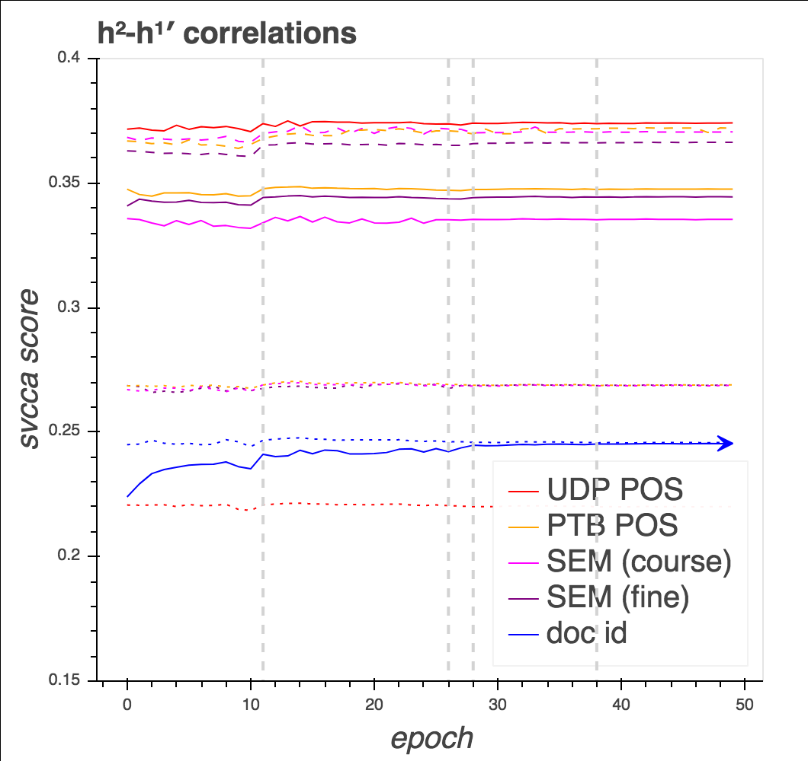

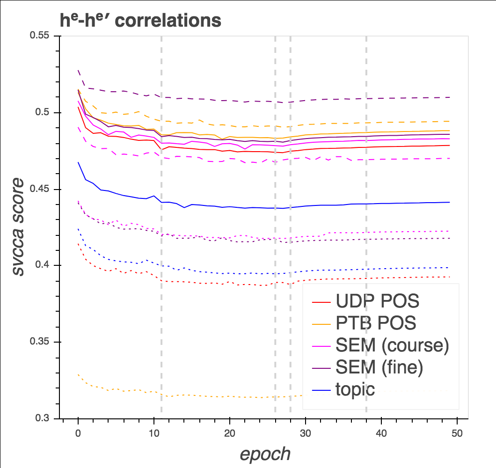
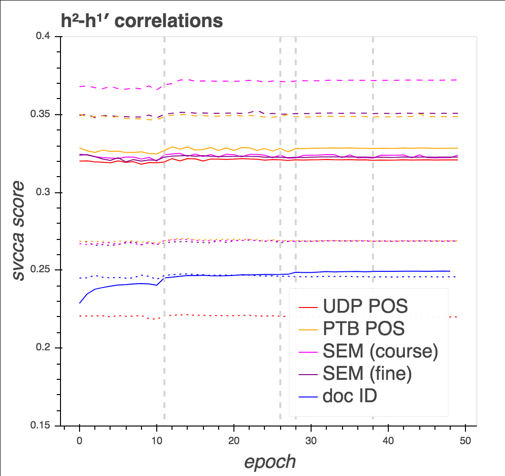
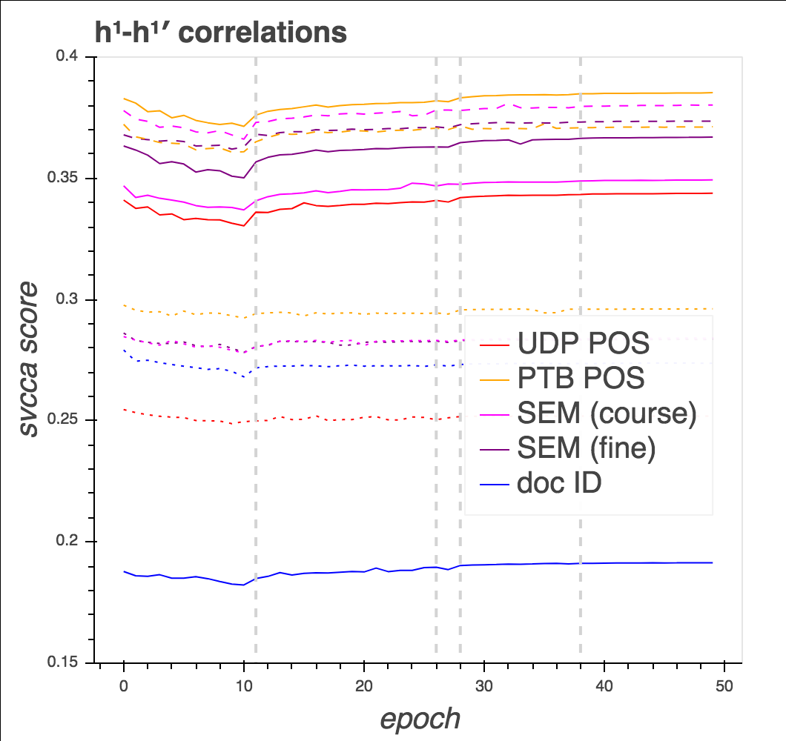
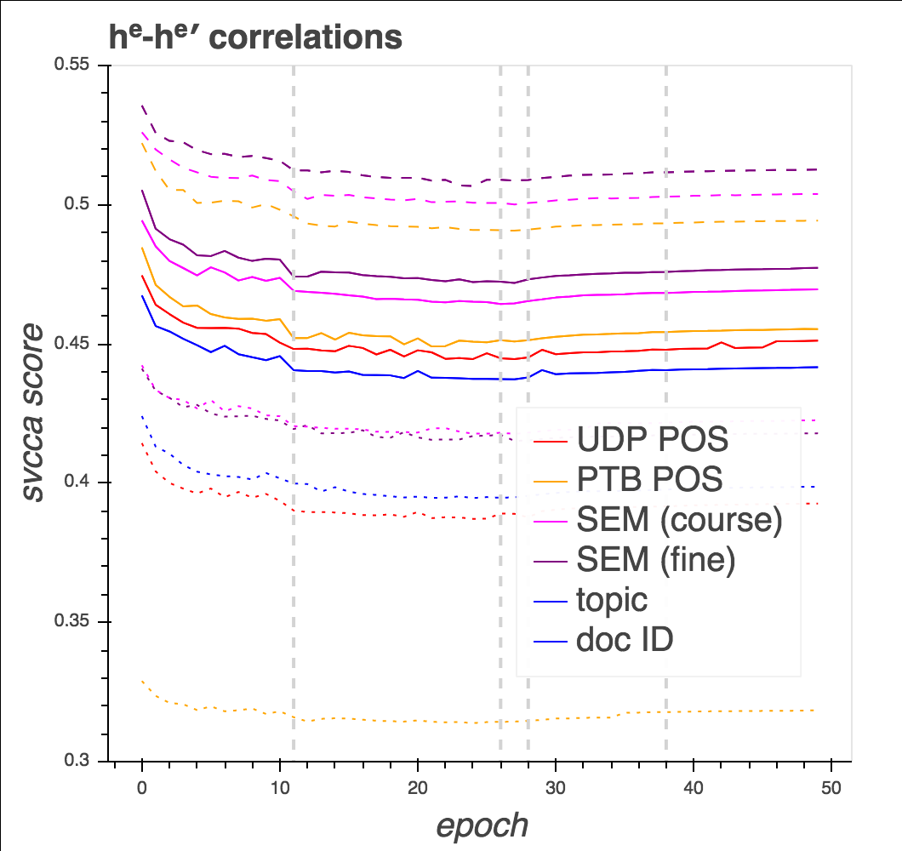
Figure 10: SVCCA correlation scores between LM and
Figure 11: SVCCA correlation scores between LM and
yt+1 tag predictor. Dotted lines use models trained on
yt tagger. Dotted lines use models trained on randomly
randomly shuffled the data. Dashed lines use GMB do-
shuffled the data. Dashed lines use GMB domain test
main test data.
data.